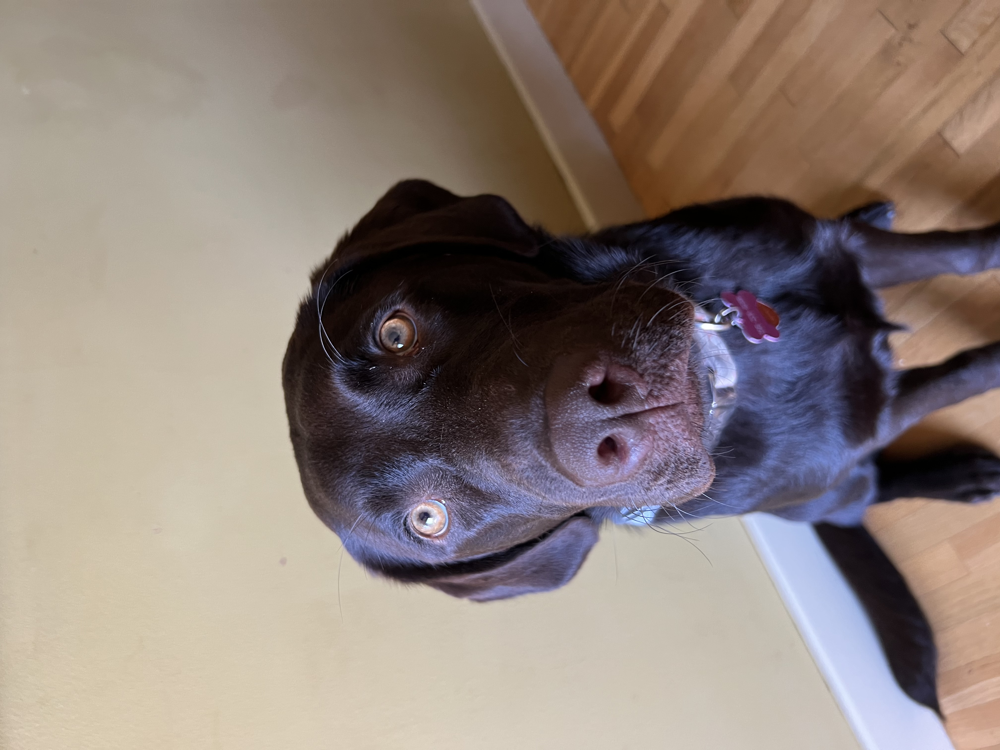
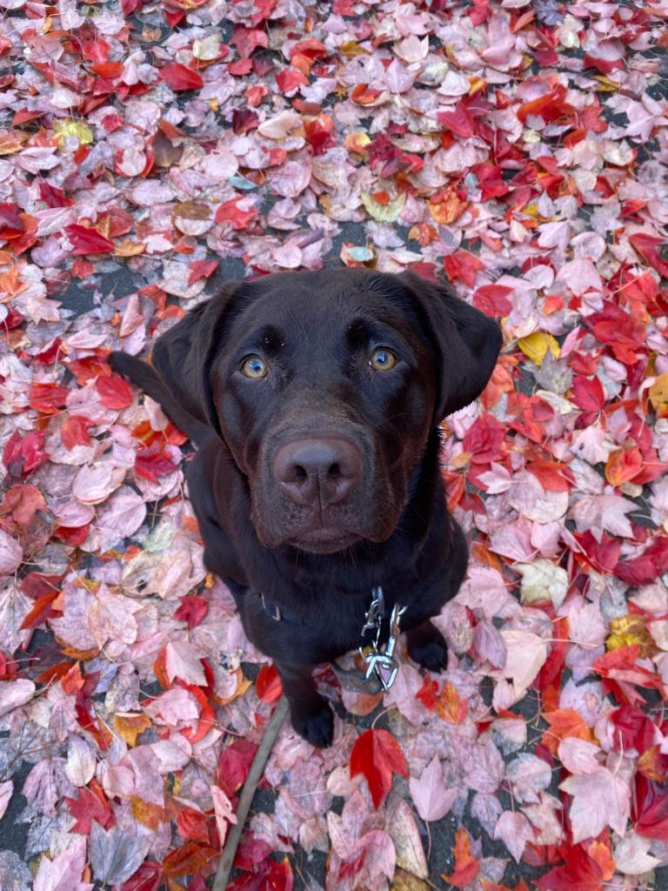
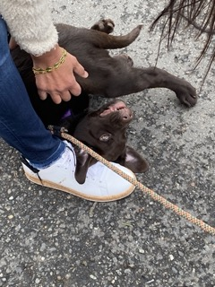
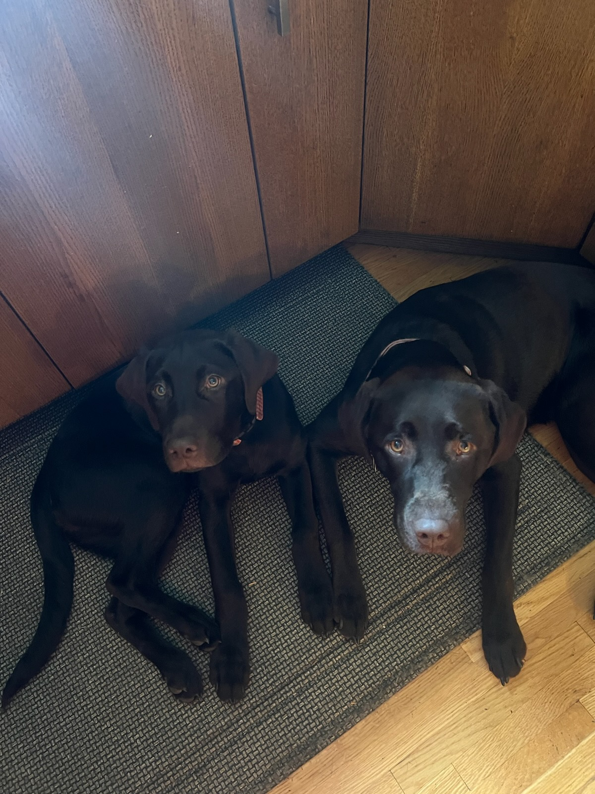
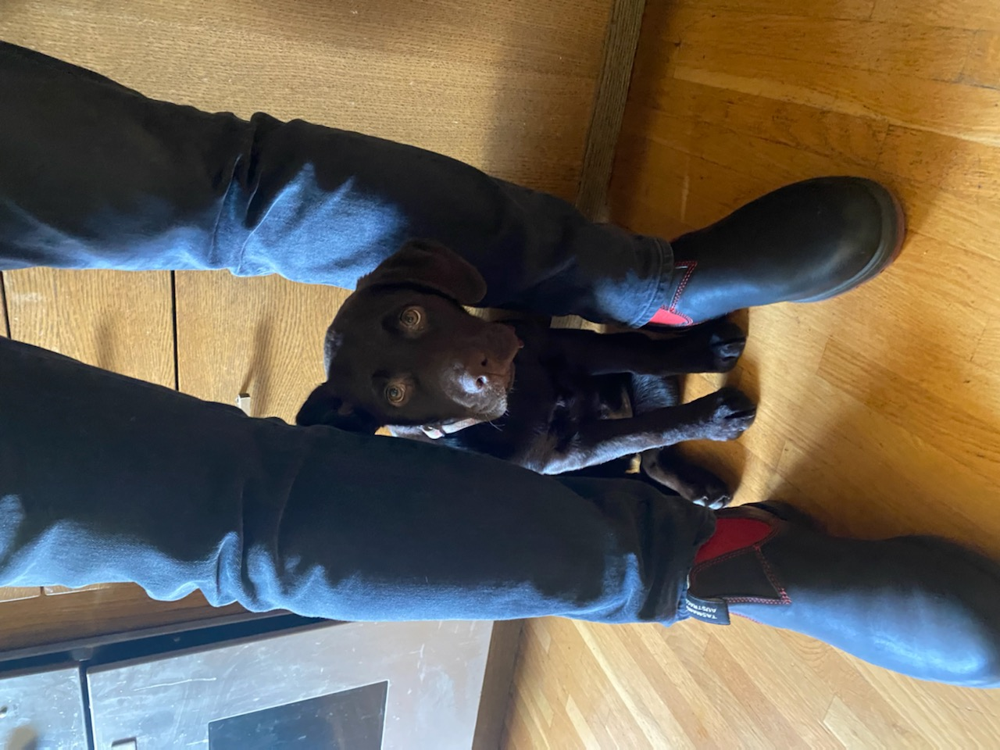
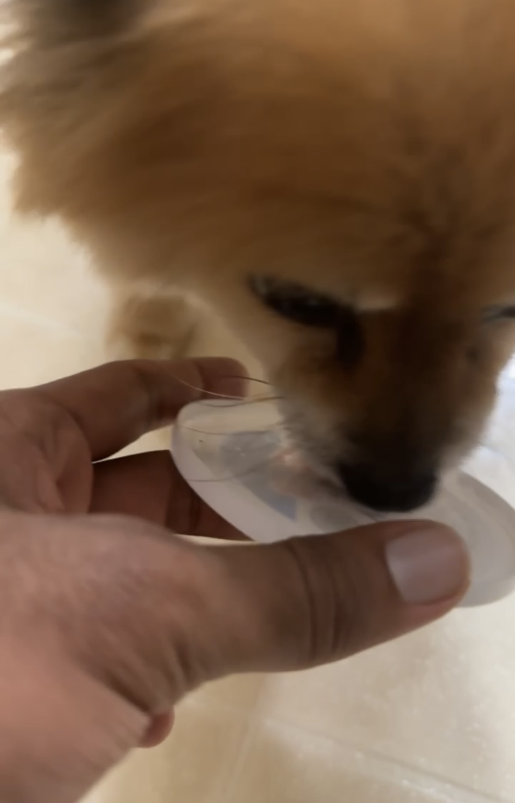
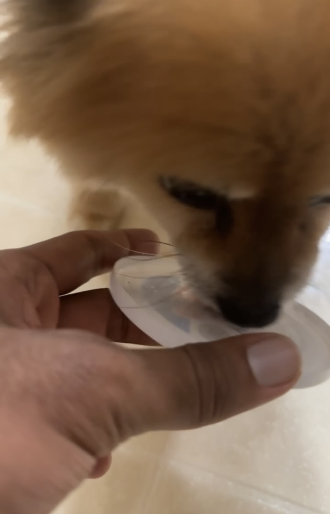

Luna the Chocolate Lab
Luna is a loving chocolate that is almost two years old. She spends her days begging for attention and waiting for humans to drop food on the floor, so she can eat it. She loves walks, except when she's tired or hungry and finds great excitement when she sees other people, not so much other dogs.
She has an annoying younger sister named Ruby who is also a chocolate. Ruby is always biting her ear and trying to take all of her toys. Ruby has a lot of energy and always wants to play. It's SO annoying, ugh, but we still love her.
Photo Gallery
   Likes:
- Her sister, Ruby
- Human food
- Playing with her toys
Bacon Q Dog

Bacon Q. Dog is a 9yr old labradoodle. He prefers to spend his days lounging among the three different beds/couches that his family has gifted him. He enjoys a walk or two around the neighborhood, as long as he can pretend that he doesn't see any of the other animals to avoid the embarrassment of not wanting to admit he has no wolf-like skills in chasing them.
At night just as the rest of the family is ready to relax, Bacon suddenly wants to release all of his energy. He will place his toys on a mini couch and frantically drag the couch around, giving his toys "a ride." There is also a lot of rolling. Lots and lots of rolling.
Photo Gallery


Likes
- Belly rubs
- Playing tug-of-war
- Sneaking onto the couch
Chief

Chief is a 9 year old pomeranian who loves to sleep as much as he can. He naps anywhere, ranging from someone's bed to the grass outside. He enjoys walking outside, but keep watch of him, otherwise he will try to consume geese poop.
He does not like any toys anymore as when he was younger, he watched a bigger toy shred his favorite one to pieces. He used to know how to roll over, but now replaced that memory with a spin as it is much easier.
Photo Gallery


 

Likes
- Sleeping
- Deli Chicken
- Pets behind the ear